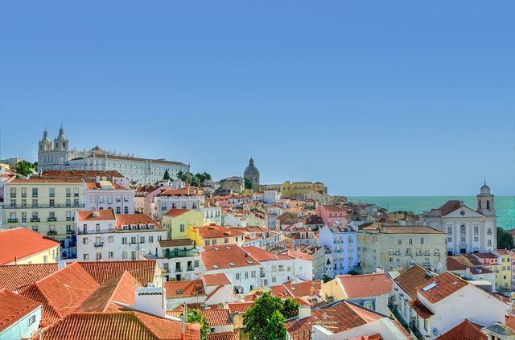
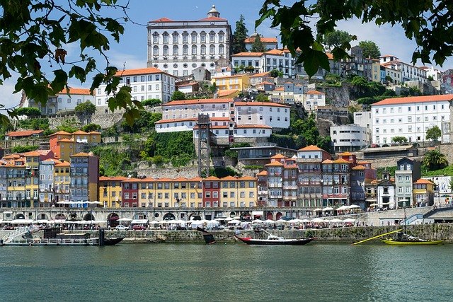

Visit Portugal

Interesting cities in Portugal
- Lisbon
- Porto
- Madeira
- Sintra
Itinerary in Portugal
One of the oldest countries in Europe, its territory has been continuously settled,
invaded and fought over since prehistoric times
Portugal is a country located on the Iberian Peninsula, in Southwestern Europe,
and whose territory also includes the macaronesian archipelagos of the Azores and Madeira.
It features the westernmost point in continental Europe,
and its Iberian portion is bordered to the west and south by the Atlantic Ocean and to the north and east by Spain,
the sole country to have a land border with Portugal.
Its archipelagos form two autonomous regions with their own regional governments.
In the mainland, Alentejo region occupies the biggest area but is one of the regions in Europe with a lower population density.
Lisbon is the capital and largest city by population,
being also the main spot for tourists alongside Porto and Algarve.

Lisbon, the capital of Portugal.
The largest city in it, and the main economic and cultural center in the country.
Lisbon also serves as the capital of the province and district that bear its name.
The area of Lisbon is about 100 square kilometers, and in 2021 545,923 thousand inhabitants lived there.

Porto is a port city in Portugal.
Porto is located on the northern bank of the Douro River estuary,
on the Atlantic coast and has a population of 237,584 as of 2011, and 1,762,524 in the Porto metropolitan area,
Porto is the capital of northern Portugal.
Porto has a climate reminiscent of a Mediterranean climate,
although it is influenced by wind from the ocean and is therefore cooler.
At the height of summer, especially in August, temperatures can even reach 40 degrees Celsius.